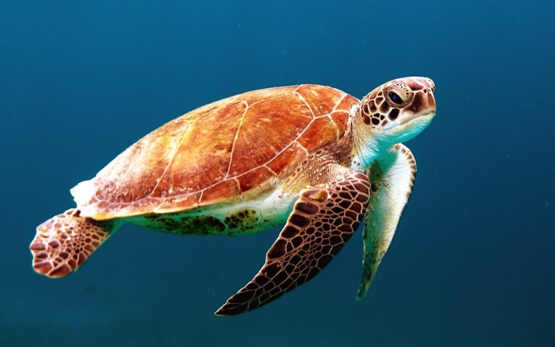
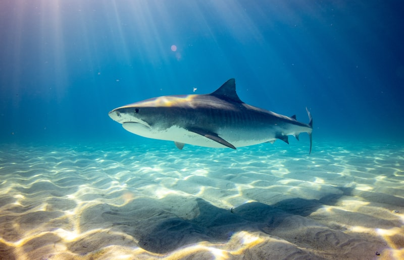
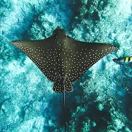

Sunlight Zone
0 — 200 meters
Where light and life collide in a symphony of color

Bottlenose Dolphin
Masters of the sunlight zone, dolphins use echolocation to hunt fish at speeds up to 60 km/h.
0–150m

Sea Turtle
Ancient navigators that have graced Earth's oceans for 100 million years, diving up to 300m.
0–200m

Reef Shark
Silent apex predators that have evolved for 450 million years, integral to reef ecosystems.
0–200m

Manta Ray
Gentle giants with 7-meter wingspans, performing elegant barrel rolls to feed on plankton.
0–200m

The Photic Zone
Only 2% of sunlight reaches 200 meters. This thin layer of ocean supports 90% of all marine life and produces half of Earth's oxygen through photosynthesis.